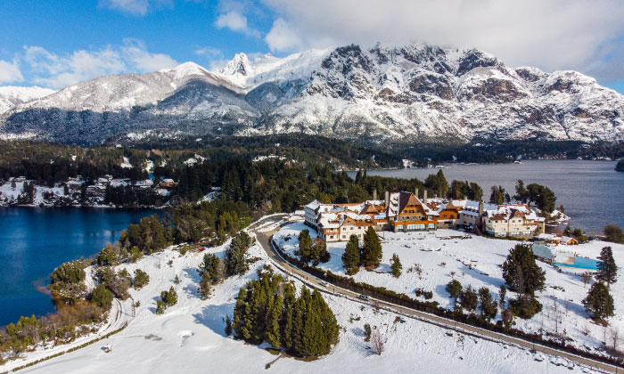

BARILOCHE
La ciudad de San Carlos de Bariloche está ubicada en la provincia de Río Negro. Es una de la ciudades argentinas más pobladas de los Andes Patagónicos. El turismo es la actividad económica primordial de la ciudad, que cuenta con importantes centros de esquí y otras actividades destinadas a los amantes viajeros. Descubrir cada rincón de esta hermosa ciudad es un placer para cualquiera, te invitamos a que conozcas un poco de todo lo maravilloso que tiene para vos.